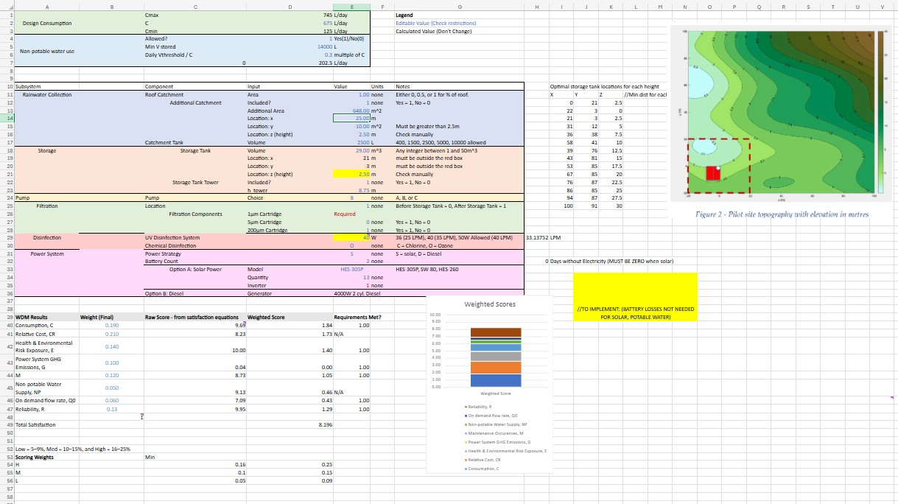
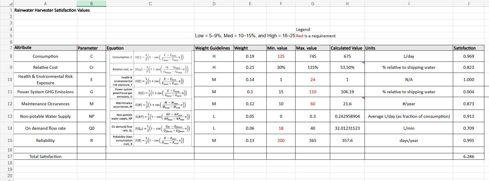
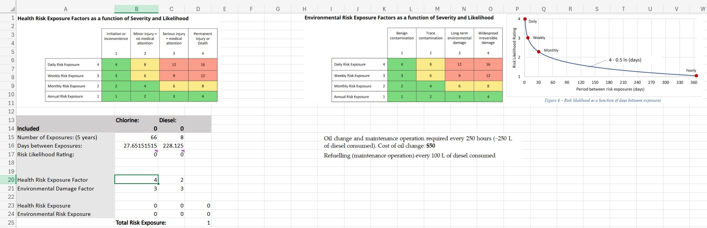
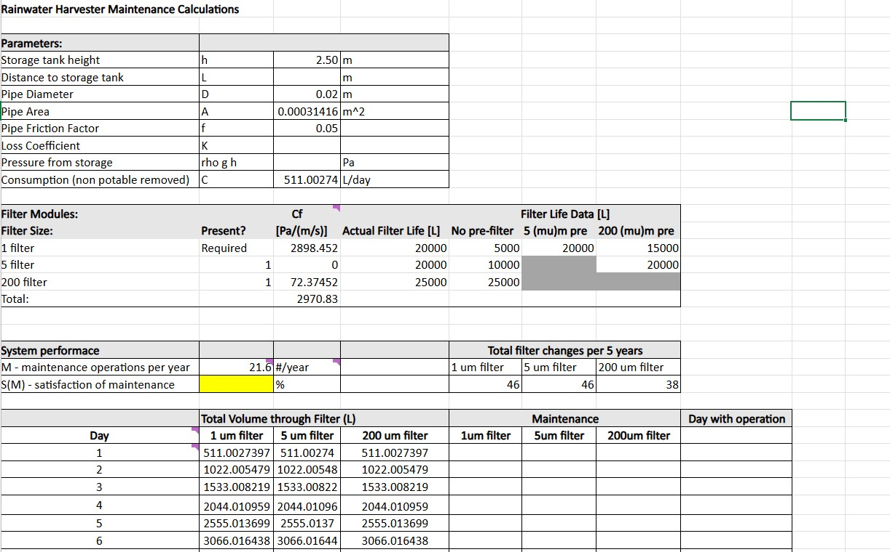

Rainwater Collection System
Overview
The goal of this project was to design and model a functional Rainwater Collection System for individual
households in Van Anda where people live off the grid a large portion of the year.
What I Did
Used Excel to perform simulations for a rooftop rainwater collection system
including collection area, historical rainfall data, energy systems, pumps,
environmental impact, maintenance, and total cost.
Peformed Stakeholder Consultation to generate target design requirments so that the final
design would fit with the unique needs of Van Anda's residents.




What I Learned
PLACEHOLDER
The ideal design must not be too general, instead it must meet the unique circumstances of the stakeholders.
Skills & Technologies
Excel Simulation · Design Process · Satisfaction Curves · Weighted Decision Matrix